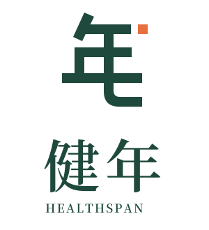
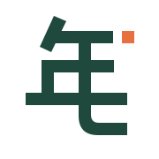
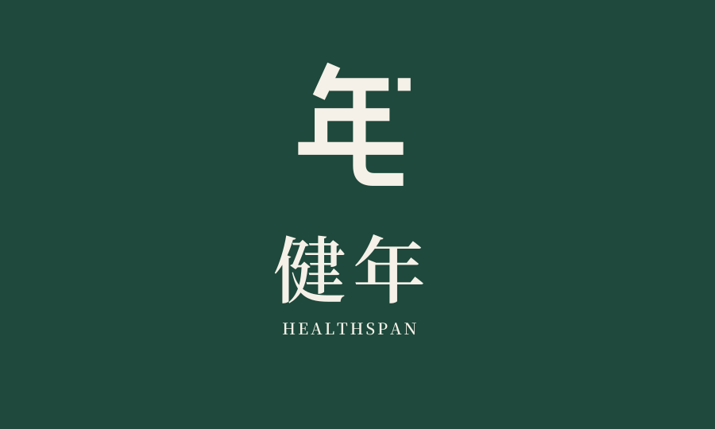
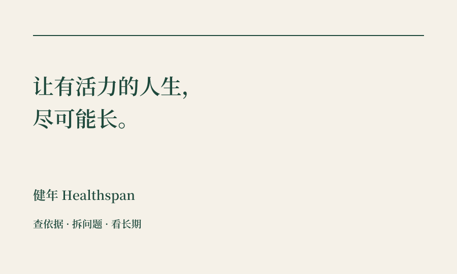
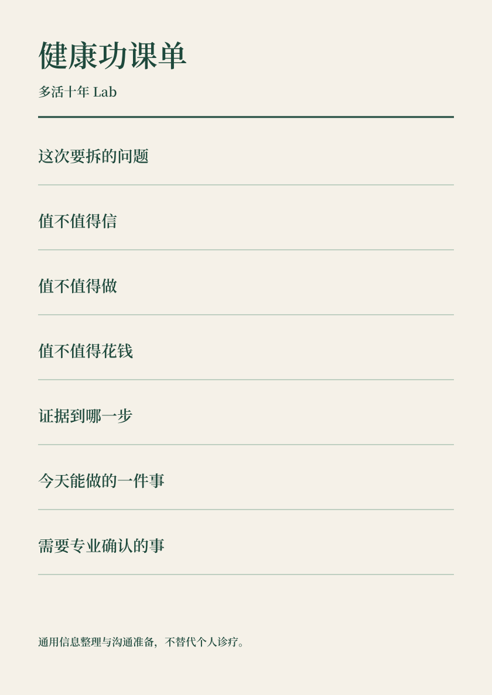

忙碌的家庭
健康决策者
核心关注 35—55 岁的经营者、管理者和专业人士。重视证据、时间、隐私与长期生活能力。
让时间，留下活力
健年品牌识别与商标设计提案
从健康功课出发，走向长期的信任。

已有事实 · 设计依据
核心关注 35—55 岁的经营者、管理者和专业人士。重视证据、时间、隐私与长期生活能力。
查依据、拆问题、算投入，帮助理解哪些值得信、值得做、值得花钱。
真实问题反复出现后，再验证工具、专业合作与家庭健康管理服务。
设计比较 · 非注册检索结论

从“年”出发，末笔延展。名称联想直接，也能形成独立图形。
优点：中文记忆强，延展性好。打开的双环连接向前的线，表达时间与持续行动。
优点：轻盈、易缩小。书页和书签构成几何标记，贴近研究、整理与内容。
优点：内容入口贴切。推荐方向 A · 年字长线
保留“年”的识别骨架，用稳定横画建立秩序。末笔向右延伸，作为可持续行动的视觉隐喻；橙色方点只提供轻微活力。
以上为设计意图，不代表健康效果或延寿承诺。图形可以完全单色使用。
识别应当经得起缩小与单色
图形建议最小 24 px / 8 mm；16 px 只用单色图形，须按实际设备复测。
横式组合建议宽度 ≥ 180 px / 40 mm。若英文已不可读，改用独立图形或中文组合。
以交付 SVG 比例为准。不得拉伸、倾斜、换笔画，或把橙点随意移到其他位置。
深底使用反白；照片背景加独立纯色留白区。头像保持主体居中，适配圆形裁切。
主标不使用渐变、投影、金属效果，也不加医疗十字。注册获准前不加 ®。
延续现有官网资产
#1E493C稳定与识别 · 主标 / 标题#F5F1E8阅读与留白 · 大面积背景#E86F3E少量点题 · 重点 / 装饰#152B24正文 / 高对比信息#227D66圈出行动 / 非默认正文#BD4A35质疑与边界 / 配合文字标题与中文标准字采用思源宋体简体 SemiBold。字标已转为路径；标题保留中文书卷气。
正文使用系统黑体；跨设备发布图片与印刷稿须嵌入字体或转曲。英文展示统一为 HEALTHSPAN。
把长期品牌与内容账号分清楚
用于品牌首页、品牌手册、理念卡与合作介绍。
用于解释品牌方法，不与主 slogan 在同一主画面争夺注意力。
归属“多活十年 Lab”；简介沿用“专替忙人做健康功课，帮你少踩坑、少花冤枉钱。”
一套母品牌，清晰的公众入口
长期品牌 · 标准、信任与未来服务
当前内容账号 · 专替忙人做健康功课
已交付可编辑矢量模板


品牌头像 + 双面理念卡
头像用于健年母品牌；现有内容账号如要更换头像，再按识别测试决定。理念卡不填写虚构联系方式。

健康功课单 · A4 比例 · 空白模板内容视觉的固定动作
封面只保留一个真实问题。母品牌负责背书，内容账号负责与读者说话。长文、视频与功课单共用色彩、字形与批注语言。
看依据 · 看适用范围 · 看局限
健年旗下内容账号3:4 图文封面已交付 SVG；右侧为 16:9 视频标题页的版式示意。真人内容采用自然生活场景，避免用服饰暗示医疗权威。
默认地域 · 中国大陆 / 截至 2026-09-08
组合标识可补充评估；Healthspan 和 slogan 的显著性另行审查，不默认全部申请。
41 类 / 优先核查
围绕内容、教育、非下载出版与相关视频服务，逐项映射实际活动。
44 类 / 长期方向专项评估
核对未来保健咨询等服务意图、具体项目与资质。商标注册不授予执业资格。
9 / 16 / 42 / 35 类 / 有业务再选
分别对应相关下载产品、印刷品、软件服务及为他人提供的广告等；不因“做品牌”就全选。
本次交付与启用顺序
定位与品牌表达梳理
三个图形设计方向
主方案横式 / 竖式 / 单色
中文独立字标与头像
色彩、字体、留白与尺寸
账号背书与内容封面
理念卡与健康功课单
注册准备图样与清单
确定主图形与标准组合
确定申请主体和真实业务
完成文字、图形近似检索
锁定申请图样与服务项目
验证 24 px 与单色实物
字体与图形权利归档
已有账号逐项核对名称
签字确认品牌定稿版本
真实账号与联系方式规范
对外合作介绍与合同页眉
服务说明和专业身份说明
相应的隐私告知与授权
实际商品所需包装与标签
商标使用证据与续展台账
项目依据：决策 0009、品牌与内容总纲、品牌战略、医疗与隐私边界、官网色彩。详细来源、授权、注册步骤及待确认项见 README 与 registration/注册准备.md。